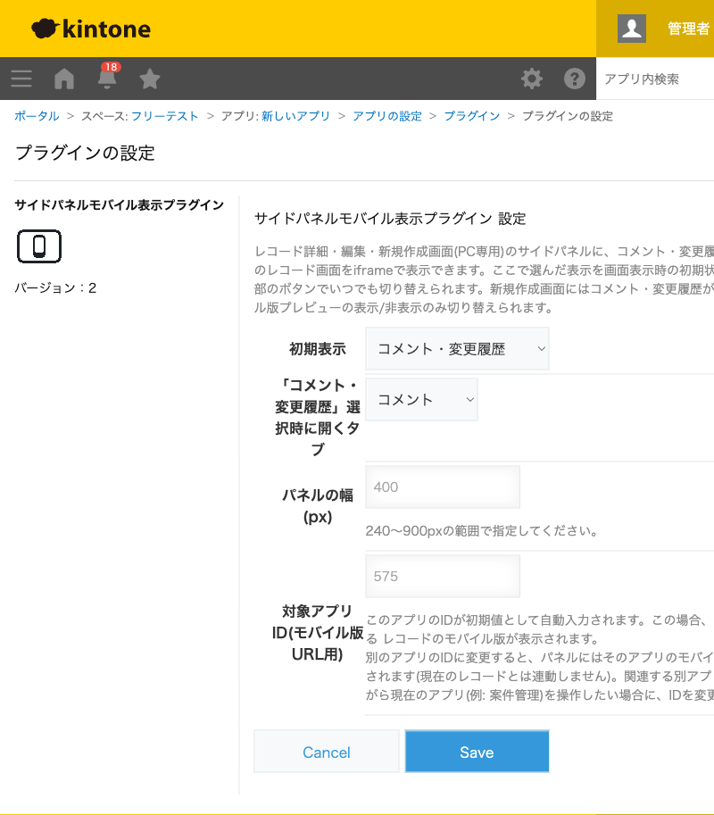

GovAppsプラグイン 安全性を確認できる無料kintoneプラグイン集
顧客の連絡先、事業者の登録情報、過去の対応履歴……。今開いているレコードを登録・更新する ついでに確認したいだけなのに、そのたびに別アプリを開き直したり、別タブを行き来したりするのは 地味に面倒です。このプラグインを使うと、レコードの編集・新規作成画面のサイドパネルに、 見たいアプリのモバイル版画面をそのまま表示できます。別アプリを開き直す手間なく、 画面を見比べながら手元の作業を進められます(PC専用)。
案件管理アプリで新しい案件を登録するとき、これまでは顧客マスタを別タブで開いて連絡先や取引条件を確認し、また案件管理のタブに戻って入力する、を繰り返していませんでしたか。設定画面の「対象アプリID」を顧客マスタのIDにしておけば、案件のレコード画面のサイドパネルに顧客マスタのモバイル版一覧がそのまま表示されます。タブを行き来せず、見ながらそのまま入力を進められます。
窓口や電話で住民・顧客から新しい相談を受けたとき、「この人、前にも似たような相談をしていなかったか」を確認したくなることがあります。相談履歴アプリを対象アプリIDに指定しておけば、新規登録画面を開いた時点でサイドパネルに履歴の一覧が表示され、別アプリで検索し直す手間なく過去のやり取りを確認しながら登録できます。
契約更新のレコードを編集するとき、その事業者の登録情報(担当者・連絡先・過去の契約条件)を事業者台帳アプリで確認したくなります。台帳アプリを対象アプリIDに指定しておけば、契約更新の編集画面を開いたまま、サイドパネルで台帳の情報を確認・検索できます。
請求書を登録するたびに、取引先マスタで請求先の宛名・住所・締め日を調べ直すのは地味に手間がかかります。取引先マスタを対象アプリIDに指定しておけば、請求書の新規作成画面のサイドパネルにそのまま取引先マスタの一覧が表示され、確認しながら入力できます。
休暇申請や旅費精算のレコードを確認するとき、申請者の所属・役職を職員名簿で確認したくなることがあります。編集画面であれば、初期表示を「モバイル版」にしておくだけで、開いた瞬間からサイドパネルに職員名簿(対象アプリIDで指定)が表示され、別アプリを開き直さずに確認できます。
ゲストスペース内のアプリにも自動で対応します(kintoneのbuildPageUrl()でURLを取得)。
本プラグインはPC専用です(利用するJavaScript APIkintone.app.record.showSideBar()・kintone.app.record.getHeaderMenuSpaceElement()がいずれもPC専用のため)。モバイル画面向けの動作は行いません。
kintoneセキュアコーディングガイドラインに沿って実装時にチェックしています。特に重要な点は次のとおりです。
location.origin)と、数値であることを検証済みのアプリID・レコードIDのみから組み立てており、レコードの値やユーザー入力を一切URLに含めません。外部ドメインへの通信は発生しません。kintone.app.record.showSideBar()、kintone.app.record.getHeaderMenuSpaceElement()、kintone.app.record.getId()、kintone.app.getId())のみで完結します。innerHTMLを使わず、document.createElement()とtextContentのみで行っています。showSideBar()・getSideBarDisplayState()・kintone.app.record.getId()(いずれも公式ドキュメント上、新規作成画面では利用できないAPI)を一切呼び出しません。showSideBar()を一切呼び出さず、kintone標準のサイドバーの状態には触れません(自作パネルが編集ボタン等に重なる不具合の修正として、初期表示の自動変更そのものをやめました)。詳細な確認項目・確認日は下記GitHubのチェックリストに全項目を掲載しています。

設定画面・レコード画面のいずれもREST APIを一切使用しません。モバイル版プレビュー表示時に iframeが読み込むのは、実行中のkintoneサイト自身のモバイル版レコード画面(通常のページ表示、 kintoneのAPI実行数にはカウントされません)です。